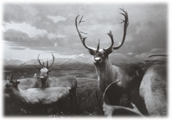

|
ダスタシュートの底では、マルセロの青泥く光った口先がほのかに浮かび上がっていた。夜店のケミカルブレスレットのようなわずかな幻光である。あまりに頼りなくて周囲を照らす灯りには成り得ない。マルセロが身体を動かしたところで闇がねっとりとかき混ぜられるだけである。しかしその漆黒の、見えるものすべてが溶けていて曖昧な状況にあっても、突然現れたネズミの異様さはくっきりと伝わってきた。
そのネズミはマルセロのようにビーンズの靴をはいて現れたわけではない。リュックサックを背負っていたわけでもない。毛色は通常のドブ色に少々の銀。肉付きはよくなく、みすぼらしい印象が強かった。ところがネズミは外見の貧相さをくつがえすほどのじりじりとした威圧感を放っていた。そのせいであろうか、私はネズミが膝に這い上がってきた直後からある種の焦りを感じ始めていた。まるで心の中をそっくり覗かれているような焦燥。それは人間を相手にしていてもめったに抱いたことがない居心地の悪さだった。
ネズミはまず、ひどく大きな目をしていた。転がるようによく動く二つの目玉とその周囲の筋肉が私の顔の様々な部分を神経質に捉えては分析を繰り返していた。その表情はとても強い集中力や猜疑心、あるいは学者なみの深い思考能力を秘めているようで、ニューヨークの地下鉄構内をうろついている単色単純なクマネズミの顔とはずいぶんと異なって見えた。マルセロだって喋らなければただの巨大黄緑ネズミである。私の胸の内まで探るような意味ありげな表情は見せない。
次いで、このネズミの頭はあっけらかんとハゲていた。耳から上の毛がすっかりなくなり、赤土色の地肌を無防備にさらけだしていた。まるで大粒の梅干しからよく動く目玉が飛び出しているような顔の作りである。この顔がまたいけなかった。居心地の悪さを倍加させた。なぜならネズミの梅干し顔は私にある人物を思い出させたからで、それは年月が過ぎても不思議と角の取れることがない数々の窮屈な記憶と結びついていた。
もう四十年近くも前の・・・幼かった私と城ケ崎の頑固な老人との間にあった確執の日々である。その老人は炊きたての飯以外は味噌汁と漬け物しか出さない一風変わった番屋風の食堂をやっていて、味噌汁の味と具の豊富さだけなら伊豆周辺の料理屋ではどこにも負けないという噂だった。老人は主に魚介類を生前の父親から仕入れていたために、よく私の家に酒を飲みにやってきた。そしてまだ幼かった私をつかまえては、あれこれ細かいことから水平線の向こう側に至るまでの稀有壮大を熱っぽく、時には説教口調になりながら繰り返し繰り返し語るのだった。私はその時間がとても苦手だった。老人そのものを歓迎できなかった。嫌だ、という気持ちが先に立っていた。
やっかいなことにネズミのハゲっぷりと突き出た目玉はその老人を思い出させただけではなく、当時の私の萎えるような気持ちまでもをすっかりとよみがえらせてしまった。唇の端に泡を浮かべてしゃべり続けた老人の強引さ。私を見つければすぐにものを命じた強権主義。自分の尺度をどこまでも人に押し付ける傲慢。きっとそれらは私のトラウマになっていたのだろう。そうでなければ三十有余年が過ぎた今でも身体が反応してしまうことの理由を説明できない。あの老人の仕草や匂い、眼差しだけではなく、「宮川のじっちゃん」という呼び名を思い出しただけで胃のあたりがギュッとつかまれたようになる。実は嫌っている、ということを気付かれないよう、私は率先してそう呼んでいたのだった。時にはへらへら笑いながらだ。その取りつくろい方に潜んだ自己嫌悪まで、まるで昨日のことのように込み上げてくる。あれから大いなる歳月が流れたというのに、そういった感覚だけはすぐそばで昼寝していたかのように起き上がってくるのだ。まるで記憶中枢に巣くうゾンビである。
もっとも、あの当時じっちゃんはすでにツルッパゲだったのだから、六十は越えていただろう。もはや生きているとは思えない。今でも味噌汁を作りながらどこかで客に説教を垂れているとすればそれは冥土の食堂に違いない。それでも私は宮川のじっちゃんを畏怖する。じっちゃんの顔を思い浮かべただけで背中が縮こまる。上目遣いになる。苛立ちを覚える。恥ずかしくなる。わーっと叫びたくなる。だからハゲネズミの登場はまったく喜べることではなかった。大人であるはずの私がいとも簡単に大人を失ってしまう、しかも子供の頃の姑息な自分までがよみがえる、という意味でこれはもう非常にやっかいな事態だった。
やっかいついでにもうひとつ。
この奇妙なネズミもマルセロと同様に人間の言葉をしゃべった。むしろ言葉から先に現れたような登場の仕方だった。私の膝の上に飛び乗ってきた瞬間、彼はもう話していたのだ。渋柿を渋茶に付けて縁側の日溜まりで乾かしたような声。かすれている上に割れていて、それでいてかん高いのだ。しかもその声色や口調は、二の腕に鳥肌が立つほど宮川のじっちゃんに似ていた。
「自ら死ぬということを、もしかして苦しみのせいだけにしてはいけないとワシは思うな。そこには甘美もある、とワシは思うな。死のいざないはもしかして限り無くロマンティックでもある。お分かりかな、とワシは言いたいわけじゃ。個人と社会の結びつき、あるいは閉塞的状況からのみ自殺を語ることは累計的にものごとを考えやすい学者の陥りやすいワナじゃよ。最終的には自殺もまた生きている主体が決断したひとつの希望的展開に過ぎぬ。そこのところを勘違いして苦に手繰り寄せた形で単純化してしまうと自殺学は大きく道を違えることになる。死は死に過ぎぬが、人間だけがそこに美醜を求めるのじゃからして、自ら死を決意することはある意味で美学にも通じるのじゃよ。まあ、めったにないことじゃがな。やはりほぼすべての自殺は苦しみとの対峙から起きるのじゃが、とワシは思うな、もしかして」
マルセロの言葉を整理するだけでも充分にややこしいのに、このネズミが加わったことで状況は決定的に混乱しそうだった。私はマルセロに目配せする。
早く帰ってもらえよ。
何なんだ、このネズミ？
「マルセロ知ってる。学士ボラボラ。学士ボラボラは物知りで有名。地下鉄のネズミはだから殺鼠剤を食べない。殺鼠剤の見分け方を学士ボラボラが教えたから。マルセロ知ってる。学士ボラボラは尊敬のネズミ」
「さよう、ワシが学士ボラボラじゃとワシは思うな。ほれっ、虹石じゃ」
ネズミは前脚で水晶をはさんでいた。どこから持ち出したのかわからない。それは手品のよう現れ、石の内部でちりちりと火を燃やし始めた。マッチをすったかのように周囲が明るくなる。その突然の灯りに照らされ、ハゲ上がったネズミは私を見上げた。きちんと挨拶をしているつもりなのかもしれない。だとすれば威圧感があろうがなかろうが、居心地が悪かろうが窮屈であろうが、私も挨拶を返さなくてはならない。宮川のじっちゃんは礼儀にうるさかった。客が黙って店に入ってくると注文も取りにこないほどだった。それに今の私には生き物の形状やサイズはもはや関係がなかった。壁から現れた男たちの怨念がキノコに化け、さらにそれらすべてがマルセロのお腹の中に入ってしまったのだ。人間の形をしていても、それが胸を開いて交わる対象なのかどうかが私にはすでにわからなくなっていた。逆に言えば人間の形をしていなくてもどこかに通じ合えるチャンネルがあるのなら、その存在の方がより自分との交わりにふさわしいものだと思われた。
私は膝の上のネズミに顔を近付け、形ばかりの会釈をする。
「ああ、明るくしていただいて・・・学士ボラボラ。調理師のタカハシです。よろしくね」
「ななな、なんと、よ、よろしくね。よろしくね、じゃと。マルセロ、この男は礼儀を知らんようじゃな、もしかして」
ネズミの視線がきっときつくなった。
「何か、私が失礼なことでも」
「ふん、ワシが何年生きてきてどれだけ形而下に有効な知識を詰めこんでおるのかを、お前さんはまったく知らんのじゃ、もしかして、と、ワシは思うな。それは、お前さんの表情からわかる。学士ボラボラも成り下がったもんじゃ、もしかして。つい昨日皿洗いで入ってきたような、顔にも脳にも遍歴の刻みじわがないすべすべの若造に、それも生活費のほとんどを親が出しているような甘ちゃんにじゃ、おじさんよろしくね、人生最近どう？ などと対等に言われたらお前さんはどんな気持ちがする？ あー、どうだどうじゃどうだどうじゃ」
ボラボラはじっちゃん似の梅干し頭を左右に振り、石鹸を生かじりしたようなひどく苦い表情をしてみせた。銀ヒゲだらけの鼻の頭にしわが寄っている。
「いや、そういうつもりでは」
「もしかして、人間の方が生まれつきネズミより身分が上じゃとか、そのようにお考えかな、とワシは聞きたいわけじゃ。つまりお前さんは知ってか知らずか知ってか知らずか、種によって生き物の価値は異なるという人間独自の偏見、生物種カーストに脳を毒されているのではないか、もしかして」
「そんなことはないですって」
何を言っているんだ？ どう考えても人間はネズミより上だろう、と口先まで出かかったが、相手の勢いもあって一応は否定してみせる。それにハゲ上がった頭や声色だけではなく、論理展開や言葉の畳みこみ方までがやはりどうも宮川のじっちゃんに似ていて、このボラボラをただの老ネズミだと思い切ることがどうしてもできない。
「じゃとしたらもしかして、身体のサイズで偉い偉くないを決めようとしておるのかね。大人は子供よりも偉い。ヒマワリはタンポポよりも偉い。カブト虫はカナブンよりも偉い。アメリカ人は日本人よりも偉い。日本人はエテ公よりも偉い。エテ公はネズミよりも偉い。どうだどうじゃどうだどうじゃ」
一刻も早くダスタシュートの底から抜け出してメキシコに旅立なければいけないというのに、どうやら筋書きは別の方向に向かって寄り道を始めたようだった。いや、寄り道ならまだいい。この理屈っぽいじっちゃんネズミの出現は旅そのものにブレーキまでかけてしまいそうだった。
「おい、マルセロ、何とかしてくれ」
私はあからさまにマルセロに助けを求めた。しかしマルセロは蛍光色の口先を微動だにせず、ボラボラの方を崇拝の眼差しで見つめている。私の言葉にはまったく反応してくれない。
「な、何が何とかしてくれじゃ。大きな図体でネズミに助けを求めおって。ほほほっ、お前さんの固定観念を打破してやろうかいの、もしかして」
「固定観念、ですか？」
「大きなものが偉いということであれば、この地球上でもっとも偉かったのは恐竜たちじゃ、ということになるぞ、もしかして。遠く南米はアルゼンチンに未だ埋まっておる草食竜の骨はゆうに四十メートルを越えておる。シロナガスクジラよりもでかいぞ、とワシは思うわけじゃ。つまりかつてこの星はドラゴンの星であった。それらドラゴンがドラゴンを食い、あるいはリンボクの葉を食い、シダを食い、ムカシトンボを食い、シーラカンスを食い、卵を産み、子を育て、大陸と海はすべてドラゴンの支配する場となった。しかし今を去ることながら六千五百万年前に大空より火の星メテオが降り、ドラゴンはそこで次なる主へと大地を手渡すことになる。おわかりかな、調理師、とワシは言いたいわけじゃ」
ネズミの博識ぶりはなかなかのものだった。おそらくボラボラは巨大隕石が地球に激突して恐竜に絶滅をもたらしたことを言いたいのだろう。私はふと、宮川のじっちゃんが伊東で買ってきてくれた一冊の科学の本を思い出していた。その本には恐竜の想像図がカラーで幾つも描かれていた。もう遥か昔のことなのに、その太古の図をいつまでも見続けていた自分の一心不乱さがよみがえる。他の子供たちもそうであったのと同様、恐竜の図は伊豆城ケ崎ではないどこかに私を連れ出していた。要するに、幼い私は恐竜に夢中だったのである。そしてそのことを宮川のじっちゃんは正確に知っていた。嫌悪感を抱いてしまう人なのに私がその周りから離れられなかったのは、まさに当意即妙の本や玩具がじっちゃんから次々と降ってきたからである。あの当時、恐竜の絶滅はサイエンスの世界ではまだまだ謎とされていた。しかしじっちゃんが買ってきてくれた本を読むことで、隕石衝突説が一歩抜きん出ていることを小学生の私は知っていた。
「私も知っています。隕石が落ちたことで大きなドラゴンたちが滅んだと」
「ふん。そんなことは子供でも知っておるとお前さんの胸の内があざ笑っているようじゃの。たしかに、そうじゃ。そんなことは誰でも知っておる。しかしメテオの被害は間接的であって直接的ではないのじゃ、もしかして。たとえ衝突によって天変地異が起きたとしてもじゃよ。何億年もの間安定していた地球上の環境がメテオによって大きく変わってしまったとしてもじゃ。ワシが思うに、ドラゴンはそれでも生きようとした。生きようとするのは種を越えた命そのものの意志じゃからのう。雪が降ろうと氷が降ろうとドラゴンはドラゴンを食い、リンボクやシダを食い、ゴキブリを食い、卵を産み、子を育てようとした。だが、絶滅した。調理師よ、なぜじゃ。なぜ、ドラゴンは滅んだのかな、とワシは聞きたいわけじゃ」
「さあ・・・」
私には本当にわからなかった。
「ワシらネズミ族の痕跡が爆発的に増えるのはおよそ六千五百年前の地層からじゃ、もしかして。ワシらがドラゴンに取って代わり、この地を治めるように宇宙の根本から命じられたわけじゃな。ワシらは弱ったドラゴンに群がり、卵を食い、子も食った。ドラゴンが滅んだのは、ワシらが食いつくしたからじゃ。火の星メテオが落ちて以降、ただでさえ勢いが劣ろえていたドラゴンはあっという間に姿を消してしまった。すなわち、これが哺乳類の芽から茎への成長である、もしかして、とワシは思うな。やがて哺乳類は生物界のひとつの幹になるのじゃが、そういう意味ではワシらが元祖である。エテ公の誕生だってずっと後じゃ。つまりワシらはお前さんの大先祖様であり、ワシらの脳にはこの六千五百万年の歴史と智恵が詰めこまれておる。だからワシらはエテ公が作った見え透いた殺鼠剤どころで滅ぶはずがないのじゃ。六千五百万年じゃよ、六千五百万年。対するお前さんらは、両足で歩くことに興味を覚えてから、つまりエテ公からほんの少しましなエテ公になったところでまだたかだか二、三百万年といったところじゃろう。しかも未だに同族どうしで殺し合いをしておる。命の有限を知りながらじゃ。まったく馬鹿な生き物じゃよ。ドラゴンの足下、いいやワシら元祖哺乳類の足下にも及ばぬ。ゆめゆめ、ワシとお前を対等じゃ、などと思わぬ方がよい、とワシは思うわけじゃ、もしかして」

ひょっとすると、このネズミにしつこく絡まれるのも砂嵐ののろいの一端なのかもしれない、という疑いが頭の片隅に走った。だがマルセロはでかくなった背中を恐縮したかのように丸めて、相変わらず羨望の眼差しで学士ボラボラを見つめている。そして私までがネズミの背後に伊豆の頑固老人を思い浮かべ、ぎこちない態度しかとれない畏縮状態に陥っている。どんなに社会で成功しようが、名誉ある地位を得ようが、子供の頃にとっちめられた相手に出会えば人はその時代の主従関係に戻ってしまうものだ。東大の教授だって自らの小学校時代の恩師に出会えば、口から出る言葉は「先生！」であろう。その現象が膝の上のネズミに対して起きている。背後でしたり顔で笑っているのは間違いなく宮川のじっちゃんだ。やっかいを通り越えて真面目に、つくづく、本当に困ったことになった。もうこうなると止められない。私はじっちゃんに説教された時のようにふすくれる。四十を過ぎた男が子供のようにむくれてしまう。
「では、私とあなたは対等ではないと」
「もちろん、そういうことじゃ」
「それならば、私はこのまま立ち去りますから、放っておいてください。それとも何かお望みですか」
「ワシのそばにいることじゃ。ワシをあがめながらじゃ」
何という強引さ。味噌汁に入れる岩海苔がなくなったから海に入って取って来いと命じた時のじっちゃんにそっくりだ。私はもごもご、嫌だ、母ちゃんに叱られる、とつぶやきながら網を片手にサンダルごと波間に入っていったのだった。あの時の主従関係が完全に成り立っている。
それに別の意味で、私にはどこか自虐的なところがあった。もともと痛みを受け入れる才能があった上に、根本の部分を我慢してしまう性格を職業柄作り上げてしまったのだ。これは宮川のじっちゃんとは関係のない話だ。
所謂サービス業というもの、これを長い間に渡って続けていると、下手に出なければいけないことは連続して起きた。私たちの職業・・・調理師や板前やコックはまともなお客からの叱声はもちろんのこと、あまりまともではない連中からのからかいやインネンに対しても喧嘩腰になることは許されていなかった。地回りのヤクザが料理をひっくり返して店の中で暴れたとしても、表面上は下手に出て冷静な態度を保つことが不文律とされた。加えて自分からはしゃべらない。ことを進展させない。絡んでくる相手にどんどんしゃべらせ、そういった連中が望んでいることを本人たちの口から言わす、というのがセオリーとされた。チンピラであれば言うことは決まっている。料理に異物が混入していたから慰謝料を払え、ここで店を開くなら所場代を払え。そんなところだ。これがチンピラを越えてヤクザレベルになると、いきなり契約の話になる。毎月いくらいくらで店の用心棒になってやると凄んでくる。がーっと脅しをかけ、急に猫なで声になり、持ちつ持たれつじゃないかと腰を抱くように回りこんでくるのだ。そういう時に間違っても包丁を振り上げたり、やってやろうじゃねえかなどと血気盛んになってはいけない。奴らはまさにその瞬間を待ち望んでいるのだと私は先輩たちから教えられた。不条理に出会った時は、たとえそれが人前であったとしても耐えることである。それがものを作って人に味わってもらう職業の忍耐であると。だからたとえば宮川のじっちゃんのように、相手が礼儀を知らないから注文を取らない、客が気に入らないから怒鳴りつける、食事の仕方を客にあれこれ指図する、などという態度は論外中の論外なのだ。
調理師になってからのそういった日常が、もともと好戦的とはほど遠かった私をさらに耐え忍ぶ人間にさせてしまった。自殺を図ったことはある意味でその我慢の限界を越えてしまったことを示すのであろうが、傲慢や強気に接した時、とりあえずは事を流す、荒立てないという態度は相も変わらず私の基本姿勢になっているようだった。おまけに相手は宮川のじっちゃんがじっちゃんのまま生まれ変わったようなネズミである。ネズミだと思えば何ということはないのだが、突然押し寄せてきたじっちゃんのイメージが、ボラボラをネズミ以上の存在にさせている。しかも相手は対等ではない付き合いという極めて観念的な欲求を突き付けてきたのだ。人間である私はいったいどうすればいいのか。膝の上のネズミにドギマギしている中年男。はたから見れば随分と情けない構図である。
「あがめろとは・・・何をお望みですか？」
悔しいかな、私はネズミに対して丁寧語を使っている。
「ふーむ。そのように聞いてくるということは、まだまだ全然わかっておらんということじゃ。わかれば即ち態度は決まる。いちいち人にものを尋ねるということは、知識と智恵が骨身にしみていないということじゃよ、もしかして。バットを振った後でどこに向かって走ればいいのかを他人に尋ねるメジャーリーガーがおらんのと同じことじゃ。どうやって泣けばいいのか母親にいちいち聞く赤ん坊もおらん。まあ、仕方がないじゃろう。お前さんはたかだか二、三百万年の遺伝子情報しか持たぬ生き物じゃからな。ワシらは地下鉄の線路を走り回っておっても列車に轢かれる者は一匹もおらん。人間はよく跳ね飛ばされておるわ。連綿たる遺伝子の声なき叫びとはそういうものじゃよ。親がお前さんを産んだのではない。親も含めて時がお前さんを産んだのだからじゃ、もしかして、とワシは思うな。で、タカハシのせがれ」
「はい」
ドキっとした。せがれ、などと言われたのはまさに四十年近く前の話だ。じっちゃんは時々私をそう呼んだ。タカハシのせがれ、岩海苔取ってこいや。タカハシのせがれ、親父にサバ五十本追加だと伝えておいてくれ。タカハシのせがれ、ほれ、新しい本じゃ。タカハシのせがれ、今日は母ちゃんいるかい？
「まずは言葉遣いに気を付けることじゃな。幾つになろうが、どういう地位につこうが、言葉遣いを形だけで終わらせず、魂を入れよ。言葉はすべての始まりじゃよ、もしかして。形だけの言葉は砂ひと粒の重さもないが、そこに魂が入れば言葉は畑になり、多くの穀物を育てる。ワシはそう思う。言葉とはそういうものじゃよ。言葉はあてにならん。しかし言葉ほど大事なものもない、もしかして」
じっちゃんネズミにそんなふうに言われてしまえば、何かを言い返したり言葉を挟みこんだりする隙間はない。言っていることがたしかに正しいからだ。しかし、だからこそ困る。教職に就いている人やある層の口やかましい老人が煙たがれらるのと同じ理由だ。人がやってはいけないこと。それは他人に対して正しさの定規を振りかざすことである。
「言葉とはすなわち行動の核であるとワシは思うな。言葉ができていないネズミは出産の場所もわきまえんでポロポロ産み落とす。ワシらには世界の隅々まで張り巡らされた縦横無尽な地下世界があるというのに、アパートメントの通路に置かれたダンボール箱でポロ。道路に捨てられた車の中でポロ。ブルックリン鳩の巣のそばでポロ。あっちでポロ、こっちでポロ。ポロしたのにポロに気付かんネズミもおった。そういうふうにポロポロ産み落とされた子供たちはさらに言葉を知らん。当たり前じゃ、親が言葉を知らんのだから子供が知るわけがないじゃろう、もしかして。意味不明なジャーゴン（仲間内言葉）をまき散らし、ギャーギャーわめきながら昼間の線路をうろつくようになる。彼らは苦しいのじゃよ。言葉を知らんから、胸の内を形なく訪れる観念や感情にもしかして名前を付けることができんのじゃ。じゃじゃじゃ、ほーじゃから心理という物語のプロットを追うこともできん。一匹一匹が無限の闇の中で迷子になっておるわ。その結果、いきなり泣き出す、いきなり怒り出す、いきなり食い出す、そんなネズミばかりが増えてしもうた。昔は人間の前を恥知らずに歩くような面汚しなどおらんかった。それが今はどうじゃ。平気でのそのそ現れて、あろうことか人間からエサをもらう輩もおる。世も末じゃて、もしかして」
納得しつつも、私はやはりこの説教ネズミに膝の上から消えてもらいたかった。
父を早く亡くしてしまったために、宮川のじっちゃんは私にあれこれ気をかけてくれた。それはそれで感謝すべきだと思ったのだが、父親代わりのつもりもあったのだろうか、父の死後、以前にも増して口うるさくなったことには閉口した。箸の上げ下げから歩き方、読む本や見る映画に対してまで説教が及んだ時、私はじっちゃんから離れることを企てたのだった。学校からの帰り道はじっちゃんの食堂を避けるために変更したし、じっちゃんが線香を上げに来ている時は家に帰らず熱海まで遊びに行ったこともあった。じっちゃんが私の母親に特殊な好意を抱いていたのかもしれないと思ったのはそのずっと後で、とにかくその時は血のつながりがないじっちゃんの本気や熱意や執着が苦手だった。このネズミにもまったく同じものを感じる。できることなら年に一度の遭遇でいい。あくまでも遭遇でだ。
「よくわかりました、学士ボラボラ。これからお会いした時には言葉に気をつけるようにします。ですが、私たち、先を急いでいまして」
ボラボラの鼻先でうなだれていた数十本の銀ヒゲが一斉に逆立った。ウニの刺のようにそれらは独立して動き出した。まるで嘘発見器のインジケーターだ。銀ヒゲは神経質に動きながら私の言葉を吟味している。
「私とここにおりますマルセロはこれからメキシコに旅立たなくてはなりません。なにぶんたくさんの人の命がかかっていることでして、本当に一刻を争っているのです。そろそろこのダスタシュートの底から脱出しないと」
「じゃから、ワシが来たのではないか、もしかして」
「マルセロ、知ってる。マルセロ、だからアヒャヒャヒャッと驚いた。学士ボラボラが来てくれたこと、マルセロわかった。だからアヒャヒャヒャッと驚いた。マルセロ驚くと、アヒャヒャヒャッとびっくりする。それからマルセロ、じんじんとうれしくなる」
おいっ、と出そうになった言葉がかろうじて喉元で引っ掛かった。どうやってメキシコまで行くのだと私が聞いた時にマルセロが驚いたのは、そういう意味合いだったのだ。私の問いかけが唐突過ぎて妙な声を出したわけではなかったのだ。
しかしその展開はまずい。このままマルセロの崇拝が続くようであれば、じっちゃんネズミはメキシコまで付いて来かねない雰囲気であった。私に対してじっちゃんネズミが優位に振る舞っているのも、ひとつはマルセロの態度が原因であろう。そもそもメキシコに行くことなど、つい小一時間前までは想像もしていなかったのだ。どうやってそこに行くべきなのか、何を用意をすればいいのか、どんな道中になるのかさえまったく見当がつかない。それにマルセロだっている。この犬ほどにも育った黄緑ネズミを連れて、果たしてまともな旅をすることなど可能なのだろうか。人に見られればまず怪しまれる。それにもしこのじっちゃんネズミが付いてくるようなことになれば、私の立場はますますもって厳しくなる。子供の頃だって宮川のじっちゃんの教訓めいた話はサザエの肝のように苦かったのだ。今でもその苦さは変わらない。ある程度年齢のいった私ですら畏縮しまくるような話をこれ以上この老ネズミからぶつけられるなんて耐えられない。
「タカハシのせがれ、ワシとお前は対等ではない。先人の智恵より先獣の智恵じゃ、もしかして、と、ワシは思うな」
「はい、それは重々・・・」
「それにのう、もうひとつあるぞ、もしかして」
ボラボラが後ろ足でいきなり立ち上がった。興奮してきたのだろうか。演説をまとめにかかる政治家のように、いや、ドライブがてらの東京の客に海藻味噌汁の効能を説くじっちゃんのように身ぶり手ぶりが熱を帯びてきた。
「ワシは自分の思考というものに九割の信頼を寄せておる。なぜ十割ではないかというと隙間を作るためじゃ。隙間のない思考は実は弱い、もしかして、とワシは思うな。線路のつなぎ目をぴったり合わせてしまえば夏には膨張しおってぐにゃぐにゃになってしまうわ。高速道路のつなぎ目にも同じことが言える。日本のそば粉も十割にしてしまえば、ぶつぶつ切れるろくでもないそばの出来上がりじゃ。調理師ならそれぐらいのことはわかろう。生き物の脳みそも同じじゃ。十割の信用、十割の正義、十割の自信は主体の崩壊につながる。つまりワシの言うことを突き詰めて考えれば正しいと言えるのかどうかワシにはわからん部分が一割ほどあるのじゃが、お前さんが言うことよりは突き詰めて考えんでもずっと正しい。従って、ワシの言う通りに行動することじゃ、もしかして」
だったら一割の不安、一割の不正、一割の不信を胸に抱いて今すぐ退いて欲しいと私は思った。いったいこのネズミは何を言っているのだろう。いきなり家に押しこんできた低カロリー食の訪問販売員が糖尿病を防ぐために明日からの献立をすべて決定すると宣言したようなものである。ましてや相手はみすぼらしいネズミなのだ。いくら宮川のじっちゃんの面影があろうと、その気になればひとひねりできそうな小さな生き物なのである。言う通りに行動しろ、と言われても素直にうなずけるものではない。
「あ、お前さんは今、ワシに敵意を持ったな、もしかして」
じっちゃんネズミの目玉が一瞬細くなった。
「下らんことは考えん方がよいぞ、もしかして。お前さんの手がワシを締めつけようものなら、一分もたたん内に暗がりからネズミたちの大群が現れ、お前さんの身体を粉々に噛みちぎって胃袋に入れてしまうじゃろう。娘がありながら自ら首をくくった驚くほどのぜい弱さ。その情けない男を救ったワシらネズミ族の素晴らしき強さを片時も忘れるでないわ。もしかして、とワシは思うな」
何という直感力であろう。反論する余地がまったく見つからない。
「しかし・・・」
「何がしかしじゃ」
この突っこみ方だ。これだ。私に対してだけではなく、宮川のじっちゃんはあらゆる人間に対してこれをやっていた。だから彼は好かれなかった。もともとは一流の大学を出て商社のエリートコースを進んでいた人なのに、海岸沿いの番屋に一人で住むことになってしまったのはその性格が災いしたのだと、母がいつか囁いたことがあった。母も実のところ宮川のじっちゃんが苦手だったのかもしれない。じっちゃんが男としての特別な意識を母に寄せ、母がそのことに気付いていたのだとしたらなおさらだ。
「おっしゃる通り私は人間の中でもおっちょこちょいの、料理以外には取り柄のない、まあ、どちらかと言うまでもなく、生きることには不器用な間抜けな男です。しかしその私に、ここにいるマルセロがメキシコで四つの宝を手に入れろと言ってくれたのです。憂鬱の砂嵐と戦うためにはそれしかないと彼が教えてくれたのです。それに、これは私たちだけの問題ではありません。私の娘のためにも、かつての同僚のカルロス一家のためにも、いえ、これからの人類のためにも、私は行かなければなりません。それだけの大義がある旅ですから、きっと危険なことも山ほどあるでしょう。じっちゃん、いえ、ボラボラ、あなた、まさか、その危険な旅に同行しようなどとシラスの目ん玉ほどもお考えですか。だとしたら、それはやめていただきたい。なぜなら、あなたはネズミたちにとってとてもとてもとてもとても大切な存在だからです。もしもあなたに怪我があったら、それこそ私は彼らから噛みちぎられてしまいます」
自分でもうまくまとまったと思った。しっかり相手を持ち上げ、私はへりくだり、それでいて拒絶の気持ちもはっきりと伝えたつもりだ。ボラボラは口を半開きにして私を見上げ、それからおもむろにマルセロの方を向いた。
「マルセロや。勇敢な黄緑ネズミや。ワシはお前さんに聞きたいことがある」
直接話し掛けられて、マルセロの恐縮度合いが一層強くなった。前脚を踏ん張って姿勢を正そうとしているのが私にもわかった。
「マルセロや。ワシもメキシコの四つの宝のことは気になっておった。しかしワシはそれが何であるのかをまったく知らんのじゃ。お前さんは、人間にもそれが必要だとか何だとかこのタカハシのせがれに言ったようじゃが、もしかして、その四つの宝が何であるのかを知っておるのか」
「マルセロ、知らない。マルセロ、子供ネズミの頃から聞いていた。メキシコの四つの宝。それは砂嵐ののろいを燃やす」
「なぜ、人間にもそれが必要なのか、もしかして」
「マルセロ、知らない。マルセロ、子供ネズミの頃から聞いていた。メキシコの四つの宝。それは砂嵐ののろいを燃やす。マルセロ、タカハシさんと砂を浴びた。たくさん浴びた。だから四つの宝が欲しい」
「それではもっと根源的なことを聞くがの、マルセロ。もしかして、砂嵐はどこからやってくるんじゃ。いや、そもそも砂嵐とは何じゃ、とワシは聞きたいわけじゃ」
「マルセロ、知らない。マルセロ、子供ネズミの頃から聞いていた。メキシコの四つの宝」
ボラボラが私の方に向き直った。大きな目玉は必要以上には動かず、黙って私の顔を捉えている。マルセロは悪びれたところもなく、知らない、を連発してしまった。私はまるで鰹のタタキ用の氷水を頭からかけられたような気持ちになっていた。一端高いところまで上昇した希望の水銀柱がへなへなと下がっていくような虚脱感だ。マルセロは私にあれだけの高揚感を与えながら、メキシコの四つの宝に関して実は何も知らなかったのだ。それがもし流言飛語の類いであったとしたら、私なりの決意は意味すら持たずに消え失せてしまう。メキシコに行ったところでのろいの砂粒ひとつ分の魔力にも勝てない。
「では、マルセロ。もうひとつ聞くがの。どうやってメキシコまで行くんじゃ。もしかしてメキシコは広いぞ、とワシは思うな。メキシコのどこに行くんじゃ。メキシコ・シティーか、アカプルコか、カンクンか、サカテカスか、あ？ どこじゃ」
「マルセロ、知らない。マルセロ、全然知らない」
「マルセロ、知らないって。それはあまりに無責任じゃないか！」
ボラボラが何かを言うよりも先に私の腰が浮かび上がった。同時に、屋上の縁に立っていた娘の顔、砂漠で乾ききっていたカルロス一家の無念が闇の中からよみがえってきた。私は一瞬でも、メキシコに行くことを決意したのだ。そこで四つの宝とやらを手に入れれば、未来に起こるかもしれない憂鬱を抑止できるというマルセロの言葉を信じたからだ。しかし肝心のマルセロがこの調子では話にならない。
「頭が高いわ、タカハシのせがれ！」
ゴミ袋の上で腰を浮かせた私に、ボラボラが圧力のある声を出した。鼻先で銀ヒゲが立ち上がっている。怒っているのだろうか、ハゲ頭が真っ赤にうだっている。
「お前さんが首さえ吊らなければ、マルセロはこんなところにおらんかったんじゃろう。お前さんが怨念キノコの映像におびえなければ、マルセロはこんなにみっともなく大きな身体にもならんかったじゃろうて。命がけでお前さんを守ったマルセロに対して、無責任とはよく言えたもんじゃ、もしかして、とワシは思うな。お前さんは一度死んだも同然なのじゃから、いちいちの感情でものを言うのではない。感情でものを言って何かが解決したという試しは、元祖哺乳類六千五百万年の歴史を振り返ってみても一度もないわ。タカハシのせがれよ、黙ってワシの話を聞くのじゃ、もしかして」
嫌になるぐらい筋が通っていた。しかもこのハゲネズミの声の抑揚にはかつての宮川のじっちゃん同様に反論を封じこめるツボのようなものがあった。まさに老獪という言葉がぴったりのネズミである。四十二歳厄年の私を、日米を渡り歩いてきた調理師の私を、ボラボラは理屈の上でも凌駕しようとしていた。
「さて、マルセロよ。お前さんの言うところのメキシコの四つの宝。それはこのあたりに棲む移民ネズミならば誰でも知っておる言い伝えじゃ。しかし長い年月の中で、その四つの宝が何であったのか、誰にもわからなくなってしまったんじゃ、もしかして。そうこうしておる内に、ワシらの地下帝国にもどうやらひずみがやって来た。あちらでもこちらでも異常が起きておることをマルセロも知っておるじゃろう。そろそろ決断すべき時じゃ。行かねばならん。誰かがもう一度かの地に足を踏み入れ、宝を取り戻さなくては。それにワシ自身もメキシコに旅立たなければいけない理由があるのじゃ。ちょいと秘密じゃがのう。それでは、なんじゃ、このボンクラ人間のタカハシのせがれとお前さんと、それからワシで、メキシコに向かおうかの」
「じっちゃん、いや、学士ボラボラ、本当に行かれるので？」
マルセロがうれしそうにコケケケケケッと笑う中、私は性懲りもなくもう一度尋ねた。
ボラボラの視線がきつくなる。
「間抜けは何度も聞き返す。賢い者は聞かずにわかる。ワシはもうはっきりと、行くと言ったつもりじゃが、もしかして」
「どうやって行くのですか。飛行機で行くならそれなりの用意をしないと」
マルセロとじっちゃんネズミをカゴに入れ、空港の動物検疫をくぐらなければいけないことを考えて気が重くなった。ペットだと言い張って日本に帰るのならともかく、巨大な黄緑ネズミと口うるさいハゲネズミをメキシコの入関は通してくれるだろうか。メキシコのような農業国にとって、ネズミは害獣以外の何ものでもない。彼らとともに空港に向かうことなど、それは絶対に不可能だという気がしてきた。
「誰が飛行機で行くと言ったんじゃ、もしかして」
「では、車で？」
「人間の作ったものは使わん。人間が多くの宝を見失ってしまったのは、人間が作ったものに頼り過ぎたからじゃよ。身体をもたれさせて休んでよい木と、そうではない木があることを人間は知らん。タカハシのせがれ、ワシらはまず国連に向かわなければならぬ。すべての道は国連に通じるのじゃ、もしかして」
「国連ですって？」
「さよう、国連じゃ、国際連合じゃよ、もしかして。憂鬱の砂嵐は世界の問題じゃ。お前さん一人の問題ではない。ちょうど今頃、国連総会が始まったところじゃよ」
「国連総会？ と言いましたか？」
ボラボラの予測不可能な言葉の突出に私はただ唸るだけであった。
国連？
国連総会？
イーストリバー沿いにそびえる巨大なビルディングを頭に思い浮かべた。世界の国旗がたなびく国連ビル。イスラエル大使館と近接していることもあって、あのあたりは自動小銃を構えた警官や兵士が常に警備にあたっている。今からそこに行くとは、いったいどういうネズミなのだろう。言葉をまともに受け取れば、血の気が引く思いである。
私は首を吊った時に、シャツとズボンだけの姿になった。靴は履いていないのだ。おまけにダスタシュートの底にずっといたのでひどい匂いを発しているだろう。それに奇妙なネズミ連れだ。このまま国連がそびえるファースト・アベニューを歩けば、誰の目にも奇異に映るであろう。こんな異常な風体でいったいどうやって国連の門をくぐるというのか。ゲートに近付いただけで撃たれるかもしれない。しかも国連総会とは。私がそんな場所に入りこめるわけがないではないか。
だが、私の猛烈な戸惑いを無視しながら、ボラボラはマルセロに何かを命じていた。
「マルセロ、お前さんの右耳前方のブロックをややこじんまりと強く押し、左耳後方のブロックを恥ずかしげもなく素直にやんわりと押すのじゃ、もしかして」
「マルセロ、知ってる。ボラボラの言われた通りにやる。マルセロ、右耳前方のブロックをややこじんまりと強く押してみる。マルセロ、左耳後方のブロックを恥ずかしげもなく素直にやんわりと押してみる」
理解に苦しむ指示だった。マルセロは前脚二本を言われた通りにブロックにあてがっているが、ダスタシュートの壁はびくともしない。いくら巨大になったとはいえ、ネズミが押す程度の力で壁が動いてしまってはこの七階建てのビルそのものが危うい。もちろん私が押したところで結果は同じであろう。鉄筋にブロックを詰み、コンクリートで固めた壁を押し破る方法など重機を使う以外にありえない。成り行き上彼らを手伝うべきだとは思ったが、可能性ゼロのことに力を尽くすふりをするのはいい大人としてどんなものか、という気がした。
「他にここから出る方法はないのかな。たとえばよじ登ってみるとか」
聞こえるはずの声で言ったつもりだったが、二匹のネズミからの反応はなかった。井戸の底にも等しいダスタシュートの底でマルセロは懸命に壁を押している。そしていきなりそのマルセロの鼻先にボラボラが飛び乗った。灯り代わりの水晶は彼の前脚からこぼれ落ち、ゴミ袋の隙間に転がり落ちていってしまった。周囲が再び真っ暗闇になる。見えるものはほのかな青泥色を放つマルセロの口先と、その鼻の上で壁を押そうとしてるボラボラだけである。
「暗くなっちゃって・・・なんか、無駄なことをしているようにも思えるんですがね」
そう言った瞬間、ボラボラの頭の先が壁の中にぐいっと吸いこまれた。ぱらぱらと音がして、頭が吸いこまれたあたりから小石やら砂粒やらが飛んでくる。ボラボラはどうやら小さな穴を見付けたらしく、そこに上半身を突っこんでブロックやコンクリートの破片をかき出しているらしかった。
「ああ、そこに穴があったんですね」
「穴などないわ、もしかして」
ハゲネズミは壁の破片を前脚でかき出しながらかん高い声で怒鳴る。
「これだけ大きな建物に鉄骨を通し、さらにその鉄骨まで含めた重量をひとつひとつ積んだブロックでやっと支えておるんじゃ。表面は何の変哲もない壁であったしても、もしかして、ひずみはその内側のいたるところに生じておる。それを読めるか読めないか、読めたところでどう突いてやるのかじゃて。タカハシのせがれ、お前さんには無理じゃ」
そんなひどいことを他人にあからさまに言っているから会社を追われたのだろう、居場所がなくなったのだろう、という言葉が胸の中に浮かんできた。しかし冷静に考えるまでもなく、それは遥か昔城ケ崎にいた宮川のじっちゃんの事情である。目の前のネズミと混同してはいけない。私が妙な具合に畏縮してしまったのは、すべてそこからである。あくまでも目の前のハゲネズミはブルックリンに巣くう老クマネズミなのだ。そう思わなければいけない。しかしそう思えば思ったで、何だか急激に腹が立ってきた。大人しくしていればこのハゲネズミ、どこまで私を馬鹿にするつもりなのか。
「では、ボラボラ。穴も何もないところにあなたが穴を開けたというのですか。あなたの腕の力で、この七階建てのビルの堅固な壁に」
「さよう。腕の力はまったく関係ない。空手の熟達者が自然石を割るのは力ではないのじゃよ。すべてはひずみを読めるかどうかなんじゃ、もしかして、とワシは思うな。物体には、組織には、存在には必ず密度が成り立つ。密度がある以上、ゆがみもひずみも生じるんじゃ。自分より強いものを破壊しようと思えば、そこを突くしかないんじゃ。穴など絶対に開いているはずがないビルがなぜたった数カ月でワシらネズミ族に占拠されるのか、よく考えてみるがよいわ。ワシらの特技はどんな硬い場所にも穴を開けることなんじゃ。道具を使わずにのう。だから恐竜はワシらに負けおった。この壁も同じじゃ。もしかして、ここんところがちょうど密度の隙間になっておった。それをうまくマルセロが捉えて、小指一本でも穴が開くほどゆがみを大きくしてくれた。ワシはそこにちょいと触れただけじゃよ。調理師を長い間やっておると聞いたから少しはましな人間かと思ったんじゃが、タカハシのせがれはいまだに力で包丁を使うような男じゃ」
職業のことを言われて頭に血が昇ってしまった。宮川のじっちゃんの面影があったから何を言われても黙って聞いていたのだ。だが、包丁の使い方まで侮蔑されてしまうと、私としてはもう立場がない。
「だったら、そんなに私が役立たずに見えるのであれば、そちらはそちらで行ってください、メキシコに。私は私で行きますから。マルセロ、さよなら」
私はそう捨てゼリフを吐いて彼らから顔をそむけた。腹が立ってくると私は直視することを避けるのだ。これは昔からの癖だ。先生や親に叱られた時も、誰かと仲たがいをした時も、あるいはお客から叱責を浴びた時も、元妻モモコにひどい皮肉を言われた時も、耐えるにいいだけ耐える。そして視線をはずして行く。そのまま背中を見せる。そうやって離れて行く。喧嘩はしない。それが私のやり方なのだ。しかし今回ばかりはそこから先が困った。顔をそむけたところで彼らから離れる方法がなかった。このダスタシュートの底からどうやって脱出すべきなのかが皆目わからなかった。よじ登るにしても手がかりが見つからない。せめて転がり落ちた水晶の灯りがあればと思うのだが、ゴミ袋の隙間に手を突っこんで探す気にはならなかった。
「何かを言われて頭に来るなど、まさに未熟な生き物の証じゃて、もしかして」
「人間は誇りのある生き物ですから、馬鹿にされれば頭に血が昇るのは当然です」
ボラボラが壁にうがった穴から顔を出した。マルセロの鼻先でかすかに照らされ、銀ヒゲがちらちらと光った。
「血が昇れば何も見えなくなるわ。そもそもワシらがなぜ今こうやって壁に穴をうがっておるのか、タカハシのせがれはわかっておるのか、もしかして。お前さんのためにワシらは道を作ってやっておる、ということを、もしかして、全然わかっておらんのではないか」
「どういうことですか」
「ダスタシュートの底など、ワシらネズミ族にとってはブロードウェイにも等しいわ。出たり入ったり自由気侭にチョイナチョイナじゃ。なぜ、マルセロが怨念キノコの登場をちゃんとわかっておったのか、もしかして少しは考えてみたのかのう。そもそもワシはどこから入ってきたのか、もしかしてそれも考えてみたのかのう。どうだどうじゃどうだどうじゃ。ワシらはまず三ミリの穴を開ける。ついで六ミリ。十ミリ。二十ミリ。それだけあれば誰でも通れる。だがお前さんは通れん。大きくなってしまったマルセロも通れん。じゃじゃじゃからこうやって巨大な穴を開けようとしているのではないか、もしかして」
なぜ言うこと成すことすべて否定されるのか、しかもネズミに理があるのか、どうしてこういう流れになってしまうのか、胸の中の苛つきはひどくなる一方だった。だがものの感じ方を少しずらしてみれば、ハゲネズミ、いや、ボラボラの言う通り、私は策もないくせに「人間だ」という理由だけでかろうじて突っ立っている無能な存在なのかもしれなかった。
「ぼけっと見ておらんで、この小さな穴からクマネズミ二匹分真下を両手で真直ぐに、しかし左手にやや力を入れて心は水平に押すんじゃ。ブロック三つが向こう側に落ち、同時に大穴が開くわい、もしかして」
どう考えてもダスタシュートをよじ登る方法はなさそうだった。ゴミ袋をかきわけて底に潜っていくという方法も不可能に思えた。もうこうなったら、あれこれ反発を感じながらもボラボラの言う通りにするしかあるまい。私は指示されたダスタシュートの壁に手をかけた。ゴツゴツとした手触りはブロックの上からのコンクリートの塗り固めである。これだけ強固なものに人間一人とネズミ二匹の力で穴を開けようとするなど、やはり私には信じられない。
ところがボラボラの言う通りに力を入れた時、そのあまりの脆さに建物の壁に対する思いこみは吹き飛んでしまった。何と、鯖寿司の木型を押さえ付ける程度の力でブロックを向こう側に押しやることができたのだ。そしていとも簡単にそれらは崩れ落ちていった。
「・・・じっちゃん！」
思わず私はそう叫んでいた。
ブロックがガシャガシャと派手な音をたて、次々と崩れていく。舞い上がる粉塵とともにコーティングしてあるコンクリート片が足下に落ちてくる。壁には鉄骨が仕込んであるはずなのにそこには何もなかった。ひょっとしたら穴の開いた部分から上すべての壁が崩れ落ちてくるのではないかという恐怖心にとらわれたが、ダスタシュートには直径１メートルほどの、まさに私一人が通り抜けるにふさわしい楕円形の穴が開いただけであった。残りの壁は頑としてそこにあった。
「じっちゃん、開いちゃったよ」
「だから何度も繰り替えし言ったではないか、もしかして」
「マルセロ知ってる。ここはデカブ・アベニュー。マルセロ通れる。タカハシさん通れる。地下世界の幹線穴道。ここはデカブ・アベニュー」
穴ができたことによって新しい空気の流れができたのであろう。暗闇の向こうからはカビ臭い風が流れこみ、粉塵を派手に舞い上がらせた。目を開けているのが辛い。呼吸をすると鼻から塵や埃が入ってくる。その上、真っ暗闇で何も見えない。だが、ここがデカブ・アベニューとは。咳きこみながらも私はマルセロに尋ねる。
「・・・マルセロ、デカブ・アベニューは人間が作った通りの名前だ。ビルの前を走っている道路のことだよ。どうしてここがデカブ・アベニューなんだ？」
「人間が作った道路の下には、ネズミが作った穴道が必ずある。マルセロ、知ってる。だから地下世界でも同じ名前を付ける。ここはデカブ・アベニュー。じんじんと広いじんじんと広いじんじんと広い穴道。マルセロ大きくなっても通れる。タカハシさん最初から大きいけれど通れる。マルセロ、知ってる。タカハシさん通れる」
すでにその地下世界のデカブ・アベニューをボラボラは進み始めているのだろうか。暗闇の向こう側、距離のあるところから癖のあるかん高い声が響いてきた。
「マルセロや、タカハシのせがれや。すでに国連総会は始まっているはずじゃ、とワシは思うな。今は地下世界の常識を教えている暇はない。さあ、先を急ぐぞ。このブルックリンからじゃと幹線穴道を使っても小一時間はかかろうて」
「ちょっと待った。ちょっと待ってくれ」
「なんじゃなんじゃ、もう！」
本当に先を急いでいるのかもしれない。ボラボラは少々ヒステリックな雰囲気になってきた。
「真っ暗で何も見えないんだから、急げと言われても人間の私にはどこをどう歩けばいいのかわかりませんよ。どうすればいいんですか」
「ホホホッ。タカハシのせがれ。じゃからもしかして人間は発展途上なんじゃ。暗闇で立往生してしまうのは目だけに頼り過ぎるからじゃ。ワシらは見えようが見えまいがあらゆる空間の中でその位置と方向を知ることができる。ワシらの近縁のコウモリ族などは暗闇で縦横無尽にフライングすることができる上、もしかしてぼってりとした甘い蛾をくわえることも可能なのじゃ。タカハシのせがれ。目をつぶれ。どのみち地下世界の大半は真っ暗じゃて、目を開けていても役に立たんわ」
「それで私にこの闇の中を歩けと・・・」
「マルセロの尻尾を握るんじゃ。マルセロがお前さんを国連まで導いてくれるわ」
「マルセロ知ってる。マルセロ国連に行ける。タカハシさん、マルセロの尻尾握る。マルセロやんわりと小走りに走る」
マルセロはそう言うと、ドンッと私にお尻をぶつけてきた。右の手の平にすべすべとしたムチのようなものがあてがわれる。巨大化したマルセロの尻尾であろうか。それは手の平の上を直線的にスーッと滑って行き、徐々に細くなっていった。
「タカハシさん、握って。マルセロの尻尾、握って」
ネズミの尻尾というものはあまり得意ではなかった。他の調理師のようにネズミを敵視することはなくても、あのミミズ色をした尻尾だけは慣れることがなかった。娘にハムスターを買ってやった時も、突き出た桃色団子状の尻尾に気持ち悪さを感じてその部分をあまり見ないようにしていた。それなのに私は今、巨大化したネズミの尻尾をつかもうとしている。しかもそのまま地下世界の、ひょっとしたら無数のネズミがうごめくかもしれない闇の中へ手探りで侵入しようとしているのだ。
「タカハシさん、握って。早くマルセロの尻尾、握って」
「おーい、何をしておるんじゃ！」
ボラボラの声が遠くなる。手の平を滑るマルセロの尻尾がどんどん細くなっていく。
・・・さあ、どうする？
私は自分で自分に問いかけた。そして答える。
始めるしかないじゃないか。
始めるしかない。
始めるしかないんだよ。な、カリン。
私は娘の顔を思い浮かべ、胸の中で三度同じ言葉をつぶやいた。そしてマルセロの尻尾を握りしめた。ほのかな体温が伝わってきた。尻尾に対する気持ちの悪さがなぜか消えていく。そのまま一歩踏み出す。暗闇の中で動きが生じる。素足のまま崩れ落ちた壁やブロックを乗り越える。ニュッとした感覚があって足の裏は地下世界のむきだしの底面をとらえる。マルセロは私を引っ張る。私は闇に向かって歩き出す。
「・・・マルセロ、お前を信じるよ」
「マルセロ、知ってる。国連まで行ける。尻尾から手を離さないで」
どこまで続いているのかわからない完全なる闇。しかしマルセロの温もりが手の中にあることで、闇そのものをいたずらに怖がるような事態は避けられた。むしろ私が恐れたのは、闇の中に何かを投影してしまいそうな自分の想像力である。消えては浮かぶ自殺者たちのイメージ。怨念キノコが見せつけた映像はマルセロの腹に入ることで消えてしまったが、私の脳裏にはしっかりと残っている。ともすれば闇の中でそれらを復活させてしまいそうな予感があった。
「マルセロ、本当に、お前を信じるよ」
心のダムが決壊しないことを祈りつつ、私はもう一度マルセロに話し掛けた。マルセロはもう相づちを打つこともなく、ぐんぐんと闇の中に入っていった。（第６回 了）
|